Estratégia MarÃtima · Ensaio Final
Atlântico Sul 2030
A Guerra dos Cabos e Portos na Competição Tripolar
1TEN AN Ana Filipa Pereira · 1TEN FZ Edgar Carvalho
Instituto Universitário Militar · CPOS-M 2025/26 · GT4
[Postura erecta. Ritmo pausado.]
"Em Março de 2026, o Estreito de Ormuz encerrou. O Mar Vermelho estava já interditado.
Com ambos os pontos crÃticos obstruÃdos, a rota do Cabo da Boa Esperança tornou-se a
única alternativa viável para o petróleo global. Não é ficção estratégica — é o contexto
que nos trouxe aqui." · 1TEN Pereira · Ⱡ30 seg
Abertura
O Despertar do Atlântico Sul
Três sinais empÃricos · 2024–2026
+74%
Tráfego pela rota do Cabo · Jan–Fev 2024
FMI · 2024
−90%
Trânsitos no Estreito de Ormuz · Março 2026
Kpler · 2026
20 M bbl/dia
Petróleo redireccionado para a rota do Cabo
EIA · 2025
Deixou de ser periferia. É hoje rota vital — e exposta.
"Três sinais empÃricos. Mais setenta e quatro por cento — aumento do tráfego pela rota
do Cabo entre Janeiro e Fevereiro de 2024. Menos noventa por cento — redução de trânsitos
no Estreito de Ormuz em Março de 2026. Vinte milhões de barris por dia redireccionados
para a rota do Cabo. O Atlântico Sul deixou de ser periferia. É hoje rota vital — e
exposta." · 1TEN Pereira · Ⱡ1 min
Tese · Roadmap
Tese central · Estrutura do argumento
A lacuna de segurança resulta de um conceito de ameaça desactualizado :
a competição tripolar é infraestrutural — cabos, portos, corredores —
não sea control clássico.
§ I
Chokepoints tridimensionais
Geográficos · digitais · logÃsticos
§ II
Competição infraestrutural
Stratégie générale · manobra indirecta
§ III
Hedging das médias
A sua viabilidade
prova a tese
§ IV
Modernização qualitativa
ISR · drones · vigilância de cabos
"O ensaio responde em quatro tempos: redefinição dos chokepoints; caracterização da
competição como infraestrutural; demonstração de que o hedging é a prova empÃrica
da tese; e definição da modernização naval relevante como qualitativa." · 1TEN Pereira · Ⱡ30 seg
Cadeia lógica
Cada secção é consequência da anterior
flowchart LR
P["Pergunta de partidaPor que falta arquitectura "]
I["§ I · ChokepointsConceito de ameaça "]
P -->|"redefine
Cadeia lógica · seta dupla §III → C marca a prova empÃrica da tese.
Skip se faltar tempo. · 1TEN Pereira · Ⱡ30 seg (opcional)
§ I · Chokepoints
Chokepoints tridimensionais
Três camadas · uma só vulnerabilidade
Geográficos
Suez · interdição parcial 2024–
Ormuz · −90% (Mar 2026)
Cabo da Boa Esperança · +74%
Digitais
95% dos fluxos intercontinentais de dados
10 biliões de dólares/dia em transacções
2Africa · 45 000 km · 33 paÃses
LogÃsticos
Pré-sal: 16,8 mil M bbl (reservas)
Triângulo do LÃtio · 56% reservas mundiais
Procura de lÃtio × 9 até 2040
Vazio institucional · O Art. 6.º do Tratado do Atlântico Norte limita o Art. 5.º a norte do Trópico de Câncer. Abaixo, sem arquitectura colectiva equivalente.
"A noção clássica de chokepoint enquanto estreito geográfico é insuficiente. O Atlântico
Sul integra três camadas: geográfica, digital e logÃstica. E carece de protecção
institucional para qualquer das três. O Artigo 6.º circunscreve a NATO a norte do
Trópico de Câncer." · 1TEN Pereira · Ⱡ1 min
Secção
I
Vulnerabilidade tridimensional do Atlântico Sul
Geografia · dados · logÃstica — uma só lacuna institucional
§ I.1 · Geográfico
Chokepoints geográficos
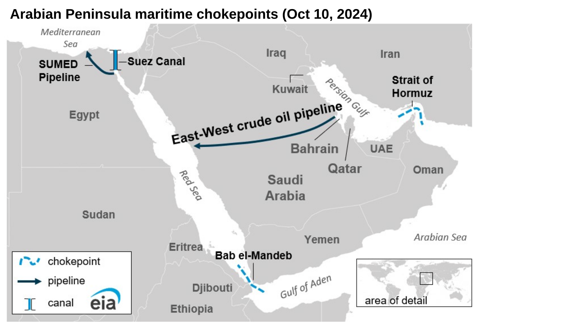
Chokepoints da penÃnsula arábica · Suez · Bab el-Mandeb · Ormuz (EIA, 2024)
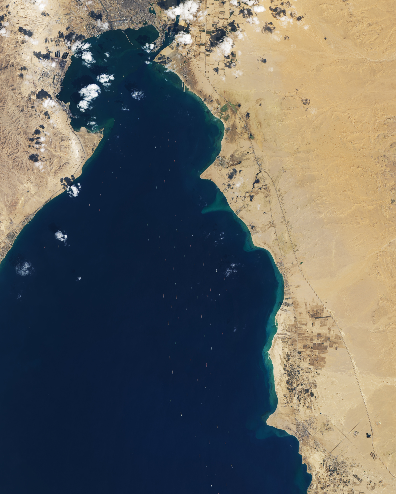
Ever Given · Suez 27 MAR 2021 · NASA Landsat 8 OLI
Suez e Ormuz interditados em simultâneo
Cabo · alternativa estrutural, não conjuntural
Seguros e armadores reformulam o risco
FMI (2024) · Kpler (2026) · UNCTAD (2024) · EIA (2024, 2025) · NASA Earth Observatory (2021)
[Apontar para o mapa.]
"Bloqueios simultâneos: Ormuz a Oriente, Suez no Mediterrâneo. A rota do Cabo é
alternativa estrutural, não conjuntural. Seguradoras actualizam fórmulas, armadores
re-equacionam rotas. Para o Atlântico Sul: mais tráfego, mais relevância, mais exposição."
· 1TEN Paulino · Ⱡ1 min
Bónus · UNCTAD
Disrupção das rotas marÃtimas globais
UNCTAD · Navigating Troubled Waters · 2024
VÃdeo não disponÃvel — ver fontes/2024-navigating_troubled_waters_video.mp4
UNCTAD (2024) · Impact on Global Trade of Disruption of Shipping Routes in the Red Sea, Black Sea and Russian Federation
Slide opcional · usar só se houver folga entre S5 e S6. Reforça leitura institucional UNCTAD.
· 1TEN Paulino · Ⱡopcional
§ I.2 · Digital
Chokepoints digitais
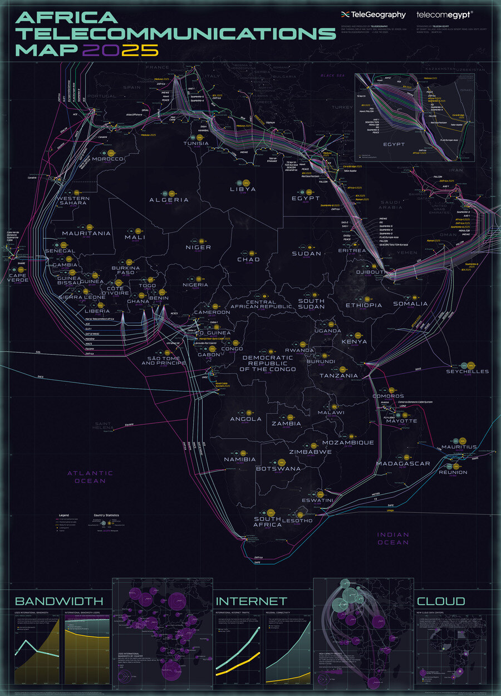
Africa Telecommunications Map 2025 · 77 sistemas de cabos · Christian / TeleGeography
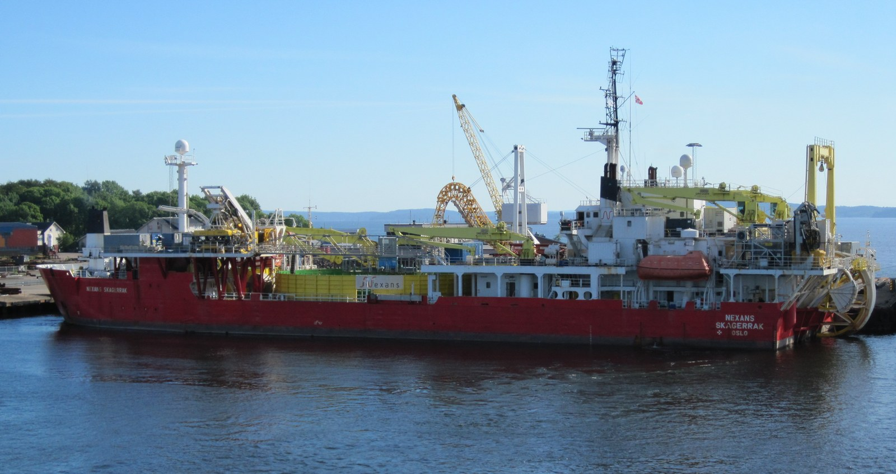
Nexans Skagerrak · navio posa-cabos
95% dos fluxos intercontinentais de dados2Africa · 45 000 km · 33 paÃses · 180 Tbps
Mar 2024 · ACE, SAT-3, MainOne cortados
Nov 2024 · Yi Peng 3 arrasta ferro de fundear 180 mn (Báltico)
RAND (2025) · CSIS (2025) · Meta (2025) · SIPRI (2025a) · Internet Society (2024) · Christian (2025)
[Apontar para o mapa.]
"Noventa e cinco por cento dos fluxos intercontinentais de dados — e dez biliões de
dólares em transacções financeiras diárias — passam por estes cabos. O 2Africa, com
45 000 km, conta com a China Mobile entre os parceiros. Em Março de 2024, ACE, SAT-3
e MainOne foram cortados ao largo da Ãfrica Ocidental. Em Novembro de 2024, o navio
chinês Yi Peng 3 arrastou o ferro de fundear por cento e oitenta milhas náuticas sobre
cabos no Báltico. O corte de cabos não é hipótese — é prática contemporânea."
· 1TEN Paulino · Ⱡ1 min
§ I.3 · LogÃstico
Chokepoints logÃsticos
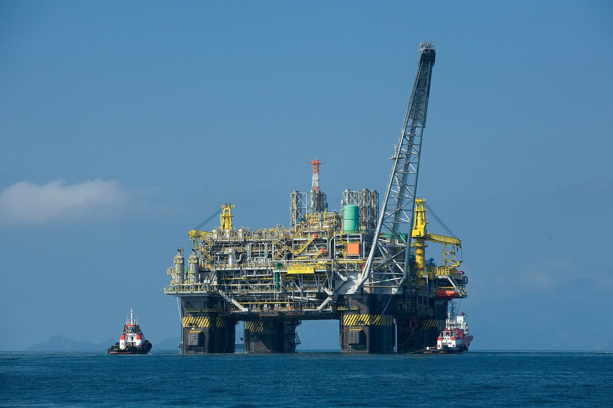
Plataforma P-51 · Petrobras · pré-sal
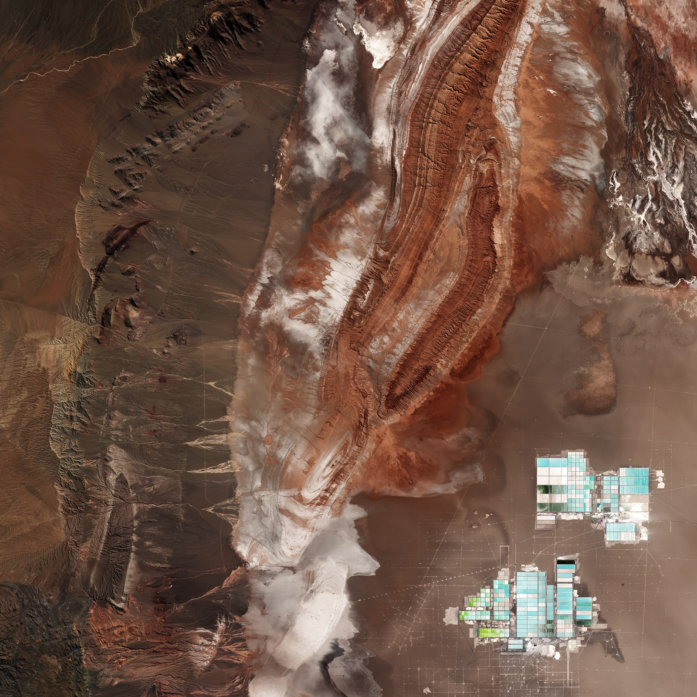
Salar do Atacama · ESA Sentinel-2 · piscinas de lÃtio
16,8 mil M bbl
Reservas do pré-sal brasileiro
ANP · 2024
× 9 até 2040
Procura projectada de lÃtio · Triângulo: 56% das reservas mundiais
IEA · 2024 · USGS · 2024
"Pré-sal brasileiro: 16,8 mil milhões de barris de reservas. Triângulo do LÃtio: 56%
das reservas mundiais; IEA projecta procura × 9 até 2040. Quem controlar as rotas de
saÃda controla cadeias crÃticas para a transição energética." · 1TEN Paulino · â± 1 min
Secção
II
Competição infraestrutural · três potências, três instrumentos
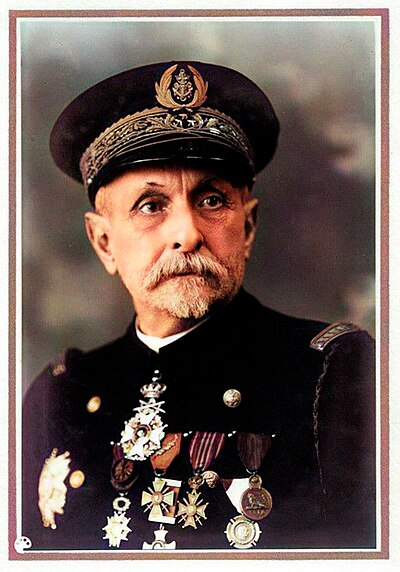
Almirante Raoul Castex (1878–1968)
Stratégie générale , manobra indirecta.
"Castex: stratégie générale integra dimensões militar, diplomática e económica. No
Atlântico Sul, cada potência escolheu um instrumento próprio — nenhum corresponde Ã
esquadra de batalha clássica." · 1TEN Metelo · Ⱡ10 seg
§ II.1 · China
CHN Infraestrutura como manobra indirecta
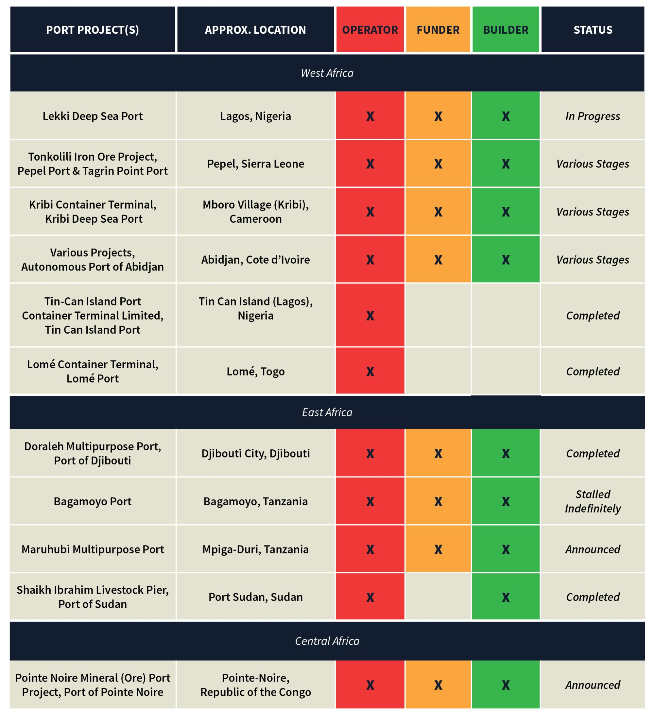
Portos operados por entidades chinesas em Ãfrica · Devermont et al. (CSIS, 2019)
46 projectos portuários na Ãfrica Subsariana$181 mil M em empréstimos · 2000–2024Porto de Bata (Guiné Equatorial) · padrão Djibouti
Cabo 2Africa · China Mobile
TAZARA · $1,4 mil M · resposta ao Lobito
Manobra indirecta de Castex — acumulação gradual de vantagem posicional pela infraestrutura.
CSIS (2019) · SAIS-CARI (2024) · DoD (2025)
"China construiu, financiou ou opera 46 projectos portuários na Ãfrica Subsariana.
Empréstimos de 181 mil milhões de dólares entre 2000 e 2024. Bata segue o padrão de
Djibouti. Cabo 2Africa com China Mobile. TAZARA: 1,4 mil milhões de dólares chineses.
É manobra indirecta de Castex." · 1TEN Metelo · Ⱡ1 min
§ II.2 · EUA
USA Resposta geoeconómica reactiva
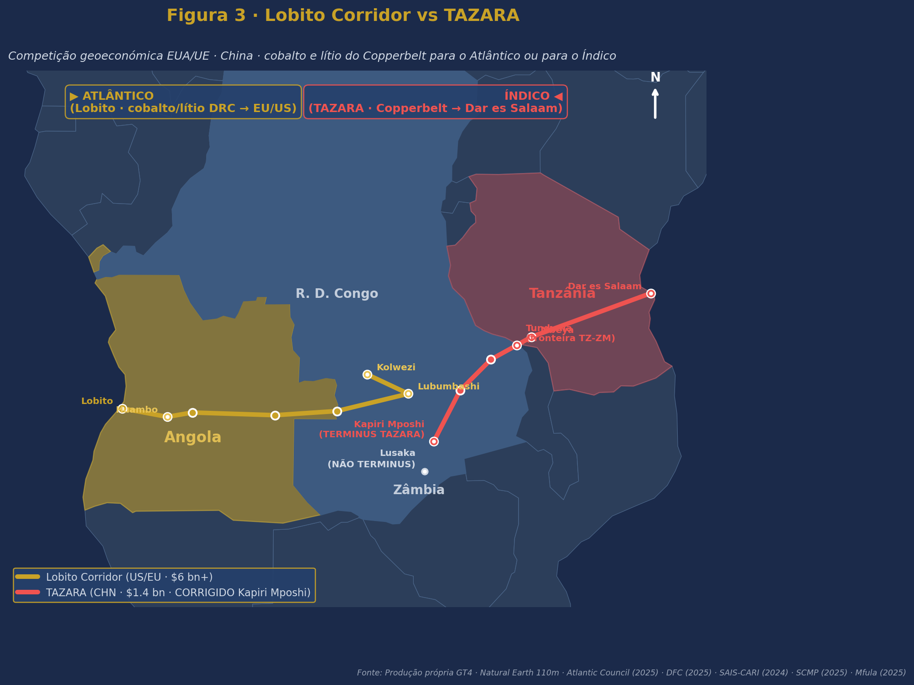
Corredor do Lobito (dourado) · TAZARA chinesa (vermelho)
Cobalto e lÃtio · DRC → Lobito
$6 mil M+ comprometidos · DFC $553 MResposta directa à TAZARA chinesa
Contraste · Indo-PacÃfico: carrier strike groups .USNS Comfort · navio-hospital (Continuing Promise , 2025).
Atlantic Council (2025) · DFC (2025) · USSOUTHCOM (2025)
"Resposta americana primordialmente geoeconómica. Corredor do Lobito: 6 mil milhões
de dólares comprometidos. Contraste: no Indo-PacÃfico grupos de combate; no Atlântico
Sul a missão de maior visibilidade em 2025 foi o USNS Comfort, navio-hospital."
· 1TEN Metelo · Ⱡ1 min
§ II.3 · Rússia
RUS DeclÃnio naval · presença terrestre
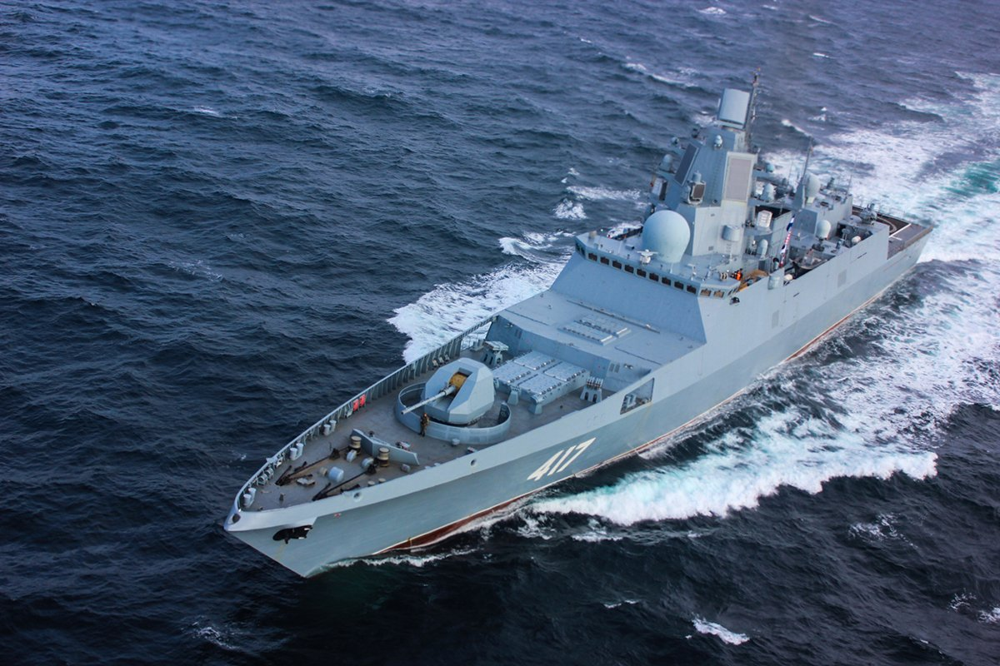
Mosi II · 2023
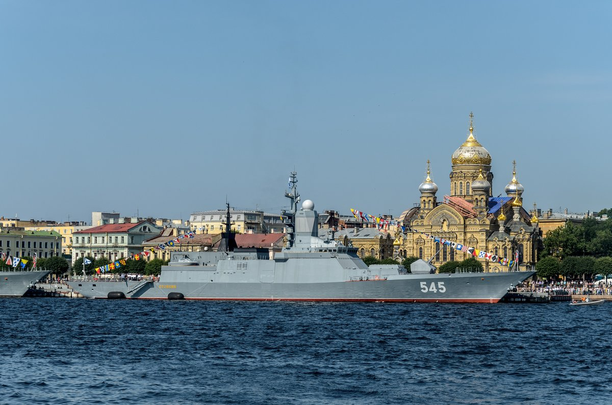
Mosi III · 2026
De fragata hipersónica a corveta em três anos. Port Sudan suspenso (Nov 2025).
Presença russa hoje terrestre — Africa Corps em 5 paÃses — não naval.
Faulkner et al. (2024) · ADF (2025) · Maritime Executive (2025) · Sudan Tribune (2025)
[Apontar para as fotografias.]
"Mosi II 2023: fragata Almirante Gorshkov. Mosi III 2026: corveta Stoykiy. Port Sudan
suspenso em Novembro de 2025. Presença russa hoje terrestre — Africa Corps em cinco
paÃses — não naval." · 1TEN Metelo · â± 1 min
§ II · SÃntese
SÃntese tripolar
CHN
Instrumento infraestruturaCapital massivoTrajectória ↗ ascendente
USA
Instrumento geoeconomiaCapital dirigidoTrajectória ↔ reactiva
RUS
Instrumento paramilitarCapital limitadoTrajectória ↘ declÃnio
A competição não se trava entre frotas — trava-se entre redes .
"China com infraestrutura, capital massivo, trajectória ascendente. EUA com geoeconomia,
posição reactiva. Rússia com meios paramilitares, em declÃnio. A competição não se trava
entre frotas — trava-se entre redes." · 1TEN Metelo · Ⱡ30 seg
Secção
III
Hedging das potências médias
Brasil · Angola · Ãfrica do Sul · Portugal não são receptáculos passivos.hedging prova que a competição é infraestrutural.
"Hedging — relações simultâneas com rivais para preservar autonomia. A viabilidade do
hedging é a prova empÃrica de que a competição é infraestrutural." · 1TEN Carvalho · â± 10 seg
§ III.1 · Brasil
BRA Active Non-Alignment
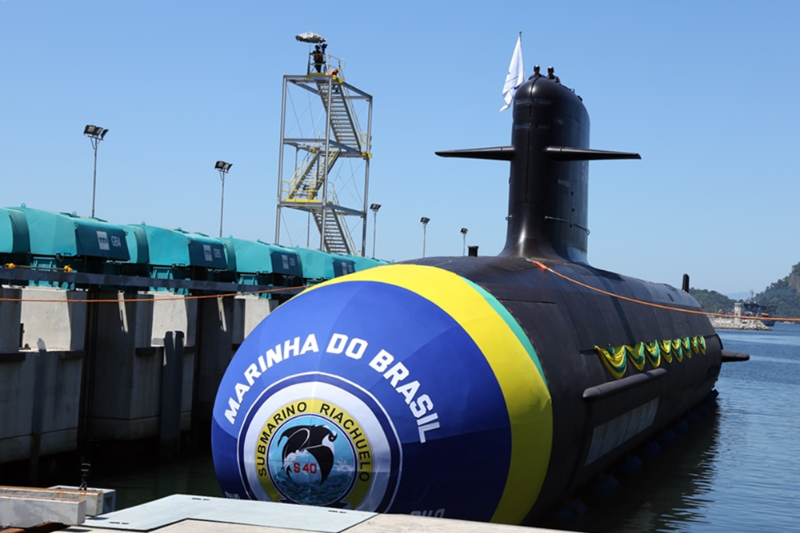
Submarino Riachuelo (S40) · Marinha do Brasil · primeiro do PROSUB
2024 · recusa formal da BRI · 2.º membro fundador BRICS a fazê-lo
2025 · co-presidência BRICS Rio
PROSUB · tecnologia francesa (parceiro NATO)~2034 · submarino nuclear Ãlvaro Alberto
Hedging em acto · cooperação técnica com França, liderança BRICS, recusa BRI.
CEBRI (2025) · Foreign Policy (2024) · Naval News (2025) · Janes (2026)
"Brasil adoptou Active Non-Alignment: 2024 recusou a BRI, segundo membro fundador BRICS
a fazê-lo. Co-presidiu BRICS Rio 2025. PROSUB com tecnologia francesa. Submarino nuclear
Ãlvaro Alberto previsto para 2034." · 1TEN Carvalho · â± 1 min
§ III.2 · Angola
AGO Middle Power Dreaming
USA
$553 M
DFC · Corredor do Lobito
FRA
€473 M
Acordos bilaterais
CHN
Maior aeroporto
Financiamento integral
Não pertence aos BRICS · equidistância deliberada · benefÃcios de todos os concorrentes.
ECFR (2025) · DFC (2025) · AidData (2025)
"Angola: 553 M USD da DFC, 473 M EUR de França, e o maior aeroporto chinês fora da
China. Não BRICS. Equidistância deliberada. ECFR cunhou middle power dreaming."
· 1TEN Carvalho · Ⱡ1 min
§ III.3 · Ãfrica do Sul
RSA O custo do hedging
−25%
Despesa militar desde 2015
SIPRI · 2025b
Estado da força naval :
2025 · presidência do G20
JAN 2026 · exercÃcios navais com RUS + CHN + IRN
FEV 2026 · voto a favor da Ucrânia na ONU
Administração Trump · excluiu RSA das reuniões preparatórias do G-20
O custo do hedging torna-se visÃvel.
DefenceWeb (2023, 2025) · Foreign Policy (2025) · UN GA (2025) · Daily Maverick (2025)
[Apontar para o gráfico.]
"Despesa militar caiu 25% desde 2015. 1 fragata, 0 submarinos navegáveis. Mas: presidiu
G20 2025, exercÃcios com RUS/CHN/IRN, voto pela Ucrânia, e Trump excluiu-a das preparatórias
do G-20. O custo do hedging torna-se visÃvel." · 1TEN Carvalho · â± 1 min
§ III.4 · Portugal
PRT Convergência institucional única
Único Estado com pertença simultânea à NATO e liderança de facto na CPLP
ZEE de 1,7 milhões de km² · concentrada nos Açores · controlo sobre rotas transatlânticasAçores · centro de gravidade extra-metropolitano , no sentido em que Castex usou o termo
Castex 1929–35
NRP D. João II · 1.º porta-drones da União Europeia · 132 milhões de euros (~30% do custo de uma fragata convencional)
Posição estratégica não na dimensão da frota — na convergência NATO + CPLP + posição açoriana .
Castex (1929–1935/1994) · DGRM (n.d.) · Bernardino (2025) · Brahy (2026)
"Único Estado NATO + CPLP. ZEE 1,7 M km² nos Açores, controlo sobre rotas transatlânticas.
Açores como centro de gravidade extra-metropolitano (Castex). NRP D. João II — 1.º
porta-drones da UE, 132 M EUR. Posição estratégica reside na convergência institucional."
· 1TEN Pereira · Ⱡ1 min
§ III · CPLP
CPLP · arquitectura emergente
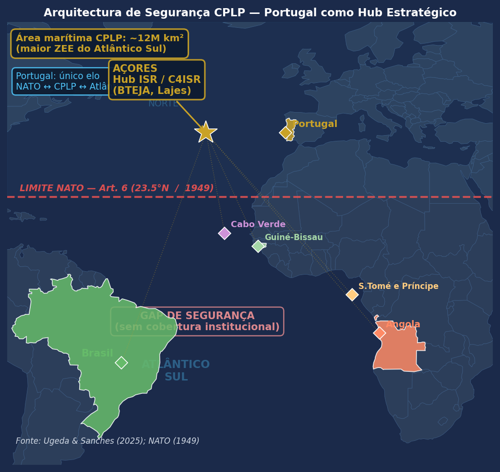
CPLP atlântica · limite NATO Art. 6.º · Açores como hub
>12 M km² · ZEE combinada com plataforma continental estendida (CPLP atlântica)ZOPACAS reativada em ABR 2023 · sem secretariado permanente nem mecanismos vinculativosCAVM Açores (proposta GT4 · conceito exploratório) · ISR partilhado CPLP / NATO / UE · sujeito a vontade polÃtica, financiamento e cadeia de comando por definir
Janela · revitalização ZOPACAS · Ãmpeto NATO/UE pós-crises de cabos · fecho financeiro do Lobito.
Bernardino (2025) · Ugeda & Sanches (2025) · Abdenur & Mattheis (2023) · NATO (1949 / 2022)
[Apontar para o mapa.]
"CPLP atlântica > 12 M km². ZOPACAS reativada Abril 2023. Propõe-se o CAVM como conceito
exploratório: plataforma de partilha de ISR entre CPLP, NATO e UE, sujeito a vontade
polÃtica, financiamento e cadeia de comando ainda por definir. Janela: revitalização
ZOPACAS, Ãmpeto NATO/UE pós-crises de cabos, fecho financeiro do Lobito."
· 1TEN Carvalho · Ⱡ1 min
Secção
IV
Modernização naval qualitativa
A resposta operacional vem do Mar Negro, do Báltico e do Atlântico Sul.
"Quarta secção: como deve a modernização naval adaptar-se? Resposta vem do Mar Negro,
do Báltico e do Atlântico Sul." · 1TEN Pessoa · Ⱡ10 seg
§ IV · Lições
Lições da Ucrânia · ISR > frotas
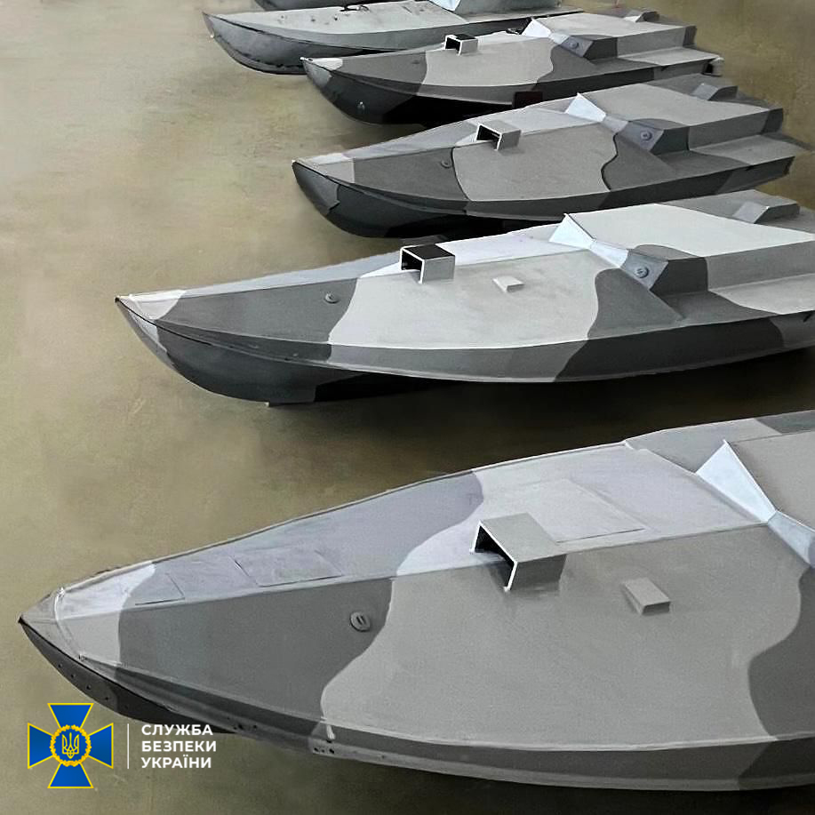
USVs ucranianos · Serviço de Segurança da Ucrânia (SBU)
Ucrânia, sem marinha equivalente à russa, afundou ou danificou:
Cruzador Moskva · navio-almirante
Novocherkassk +20 unidades da Frota do Mar Negro
MÃsseis Neptune · drones Magura V5 · ISR partilhado pela NATO
Hughes et al. (2018) · C4ISR = multiplicador crÃtico de força
Corbett (1911) · comando do mar pode ser temporário e local , não absoluto
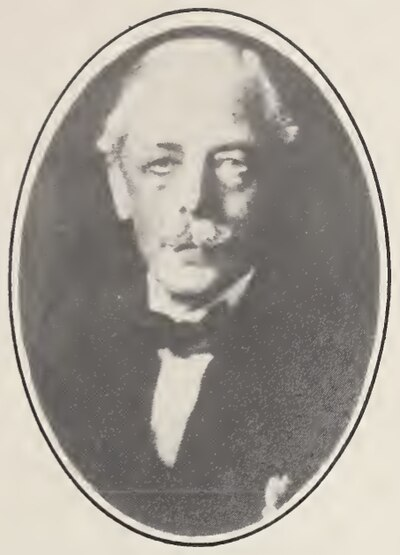
Corbett 1911
Marinhas pequenas com ISR superior produzem efeitos desproporcionados na vigilância de cabos e no controlo de rotas.
"Lição decisiva da Ucrânia: drones e ISR partilhado podem neutralizar frotas convencionais.
Sem marinha equivalente, afundou Moskva, Novocherkassk, +20 unidades. Hughes: C4ISR como
multiplicador. Corbett: comando do mar pode ser temporário e local. Aplicação ao Atlântico
Sul: marinhas pequenas + ISR superior = efeitos desproporcionados." · 1TEN Pessoa · Ⱡ1,5 min
Conclusões
Quatro proposições conclusivas
Os chokepoints do Atlântico Sul são tridimensionais — geográficos, digitais e logÃsticos — e nenhum dispõe de protecção institucional adequada.
A competição é infraestrutural . China nos portos e cabos · EUA nos corredores geoeconómicos · Rússia em presença paramilitar declinante. A doutrina naval clássica não a captura.
As potências médias possuem agência . Brasil, Angola e Ãfrica do Sul não são peças de tabuleiro — são jogadoras com estratégias próprias.
Portugal reúne convergência institucional única — NATO, CPLP, Açores — capacidade de mediação e vigilância sem paralelo .
Janela de oportunidade real : ZOPACAS · momentum pós-Ucrânia · Lobito em execução.
O risco maior não é a competição em si — é a ausência de arquitectura institucional para a gerir.
[Falar com clareza. Pausa final de 2 segundos.]
"Quatro proposições. Primeiro: chokepoints tridimensionais sem protecção institucional
adequada. Segundo: competição infraestrutural · doutrina naval clássica não a captura.
Terceiro: potências médias com agência. Quarto: Portugal com convergência institucional
única. O risco maior não é a competição em si — é a ausência de arquitectura
institucional para a gerir." · 1TEN Pessoa · Ⱡ1,5 min
Obrigado · Q&A
As 63 fontes citadas estão disponÃveis no ensaio completo.
Estamos disponÃveis para perguntas.
GT4 · Atlântico Sul 2030 · IUM CPOS-M 2025/26
"As 63 fontes citadas estão disponÃveis no ensaio completo." · 1TEN Pessoa · â± 15 seg
[Coordenação Q&A: teoria → Metelo · dados → Paulino/Carvalho · Portugal/CPLP → Pereira/Pessoa]